1. AUTOMATIC BELT TENSION ADJUSTER ASSEMBLY AND BELT IDLER
1. Preparation for installation of the automatic belt tension adjuster assembly.
CAUTION:
• Always use a vertical type pressing tool to move the adjuster rod down.
• Do not use a lateral type vise.
• Push the adjuster rod vertically.
• Press-in the push adjuster rod gradually taking three minutes or more.
• Do not allow press pressure to exceed 9,807 N (1,000 kgf, 2,205 lbf).
• Press the adjuster rod as far as the end surface of the cylinder. Do not press the adjuster rod into cylinder. Doing so may damage the cylinder.
• Do not release the press pressure until stopper pin is completely inserted.
(1) Attach the automatic belt tension adjuster assembly to vertical pressing tool.
(2) Slowly move the adjuster rod down with a pressure of 294 N (30 kgf, 66 lbf) or more until the adjuster rod is aligned with the stopper pin hole in the cylinder.
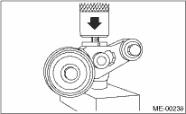
(3) With a 2 mm (0.08 in) dia. stopper pin or a 2 mm (0.08 in) (nominal) dia. hex wrench inserted into the stopper pin hole in cylinder, secure the adjuster rod.
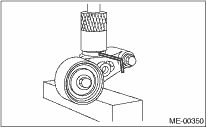
2. Install the automatic belt tension adjuster assembly.
Tightening torque:
39 N·m (4.0 kgf-m, 28.9 ft-lb)
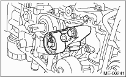
3. Install the belt idler (No. 1).
Tightening torque:
39 N·m (4.0 kgf-m, 28.9 ft-lb)
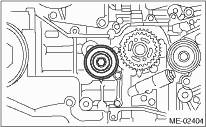
1. Prepare for installation of the automatic belt tension adjuster assembly. 
2. Turn the camshaft sprocket No. 2 using ST1, and turn the camshaft sprocket No. 1 using ST2 so that their alignment marks (A) come to top positions.
| ST1 18231AA010 | CAM SPROCKET WRENCH |
NOTE:
CAM SPROCKET WRENCH (499207100) can also be used.
| ST2 499207400 | CAM SPROCKET WRENCH |
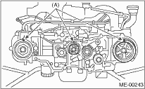
3. While aligning the alignment mark (B) on timing belt with the mark (A) on sprockets, position the timing belt properly.
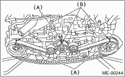
4. Install the belt idlers (A) and (B).
Tightening torque:
39 N·m (4.0 kgf-m, 28.9 ft-lb)
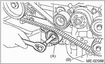
5. After ensuring the marks on timing belt and camshaft sprockets are aligned, remove the stopper pin from belt tension adjuster.
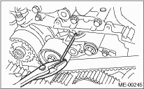
6. Install the timing belt guide. (MT model)
(1) Temporarily tighten the bolts mounting the timing belt guide.
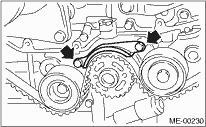
(2) Check and adjust the clearance between timing belt and timing belt guide by using thickness gauge.
Clearance:
1.0±0.5 mm (0.039±0.020 in)
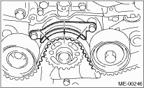
(3) Tighten the bolts mounting the timing belt guide.
Tightening torque:
9.75 N·m (1.0 kgf-m, 7.2 ft-lb)
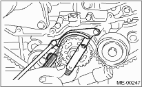
7. Install the timing belt cover.
8. Install the crank pulley.
9. Install the V-belts.